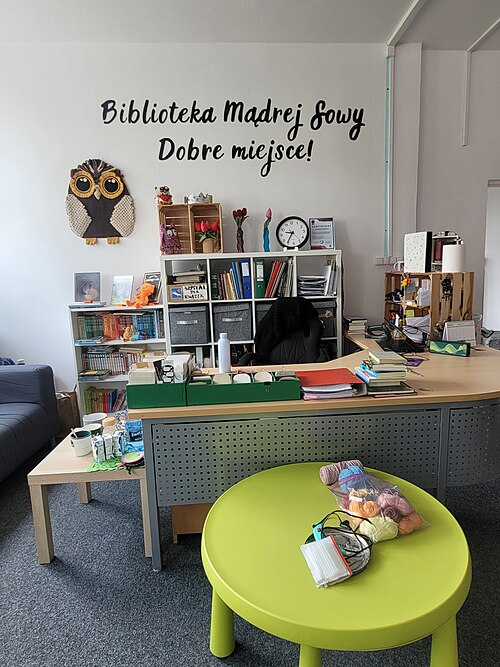

Информационные процессы вокруг нас
Повторим, что мы делаем с информацией.
Каждый день мы узнаём новые сведения, записываем их, пересылаем друг другу и преобразуем. Всё это связано с информационными процессами.
Получение
Узнаём сведения из книги, сообщения или наблюдения.
Хранение
Записываем сведения в тетрадь или сохраняем файл.
Обработка
Сравниваем, считаем, выделяем главное и делаем выводы.
Передача
Рассказываем о результате или отправляем сообщение.
Преобразование формы представления информации — один из способов её обработки. Мы можем передать одни и те же сведения таблицей, диаграммой или текстом.
Например, в таблице можно записать посещаемость библиотеки по дням недели, а в тексте — объяснить, когда посещений было больше всего и как менялась посещаемость.
Одни сведения — разные формы
Каждая форма представления удобна для своей задачи.
Таблица помогает быстро найти точные данные. Диаграмма позволяет сразу заметить различия между показателями. Текст помогает объяснить, что эти показатели означают, и сформулировать вывод.
💡 Главное правило: когда мы меняем форму представления, нельзя менять сами факты. В новом тексте должны остаться верные числа, названия и выводы.
Как читать таблицу?
Начнём с данных о школьной библиотеке.
Таблица состоит из строк, столбцов, ячеек и заголовков. Чтобы понять данные, сначала выясняют, о чём таблица и что означают числа в ней.
Посещение школьной библиотеки за неделю
| День недели | Количество посещений |
|---|---|
| Понедельник | 12 |
| Вторник | 15 |
| Среда | 10 |
| Четверг | 18 |
| Пятница | 14 |


📌 По таблице видно: максимальное значение — 18 (четверг), минимальное — 10 (среда). Числа в течение недели не только росли: в некоторые дни посещений становилось меньше.
Как читать столбчатую диаграмму?
Высота каждого столбца показывает числовое значение.
В столбчатой диаграмме сравнивают величины с помощью столбцов. Чем выше столбец, тем больше значение. Чтобы правильно прочитать диаграмму, обрати внимание на её название, подписи категорий и числовую шкалу.
Количество участников школьных кружков
Число учащихся
Учебные данные для практической работы
Наибольшее значение
Рисование — 12 учащихся. Этому кружку соответствует самый высокий столбец.
Наименьшее значение
Шахматы — 6 учащихся. Этому кружку соответствует самый низкий столбец.
Как превращать данные в связный текст?
Не перечисляем числа подряд — объясняем их смысл.
Когда мы пишем по таблице или диаграмме, важно не копировать все данные без объяснений, а составить связное описание: сообщить тему, привести важные показатели, сравнить их и сделать вывод.
О чём рассказывают данные?
Найди значения, которые нужно сравнить.
Передай числа понятными словами.
Обобщи только то, что подтверждено данными.
Пример текстового описания таблицы
«В таблице представлены сведения о посещении школьной библиотеки в течение пяти учебных дней. Наибольшее количество посещений отмечено в четверг — 18. Меньше всего посещений было в среду — 10. Разница между наибольшим и наименьшим показателями составляет 8 посещений».
✍️ Обрати внимание: предложения связаны между собой, а каждое число соответствует исходным данным. Нельзя придумывать причины, которых в таблице нет. Например, таблица не объясняет, почему в четверг было больше посещений.
Практическая работа
Одна цель и одинаковые задания для всех учеников.
4–6 предложений о посещении библиотеки за неделю. Сравни показатели, укажи максимум и минимум, добавь вывод.
4–6 предложений об участниках школьных кружков. Сравни столбцы, укажи максимум и минимум, добавь вывод.
Выбери доступный маршрут. Оба варианта равнозначны: данные, количество предложений, содержание и требования к результату одинаковы.
💻 В текстовом редакторе
Подойдёт Microsoft Word, LibreOffice Writer или аналогичная программа.
- Открой текстовый редактор и создай новый документ.
- Напиши заголовок «Таблица: посещение библиотеки».
- Изучи таблицу из раздела 03 и составь по ней 4–6 предложений с выводом.
- Добавь заголовок «Диаграмма: школьные кружки».
- Изучи диаграмму из раздела 04 и составь 4–6 предложений с выводом.
- Проверь числа, связность текста, орфографию и оформление.
- Сохрани документ под понятным именем, например «Таблица_и_диаграмма».
📒 В тетради
Для этого маршрута достаточно страницы урока и тетради с ручкой.
- Запиши в тетради тему практической работы и дату.
- Напиши заголовок «Таблица: посещение библиотеки».
- Изучи таблицу из раздела 03 и составь по ней 4–6 предложений с выводом.
- Добавь заголовок «Диаграмма: школьные кружки».
- Изучи диаграмму из раздела 04 и составь 4–6 предложений с выводом.
- Проверь числа, связность текста, орфографию и аккуратность записей.
- Оформи оба описания в тетради как одну законченную работу.
Что будет оцениваться?
- Точность чисел и названий.
- Правильное сравнение показателей.
- Два связных текста по 4–6 предложений.
- Наличие выводов по обоим источникам.
- Логичность изложения.
- Грамотность и аккуратность.
✅ Главное: оценка зависит от того, насколько правильно ты понял и описал данные, а не от того, печатал ли ты текст или писал от руки.
Вопросы для повторения
12 вопросов по теории и практической работе.
- Какие четыре информационных процесса мы повторили?
- Почему изменение формы представления информации относят к её обработке?
- Какие формы представления информации мы использовали на уроке?
- Из каких основных элементов состоит таблица?
- Как определить наибольшее и наименьшее значения в таблице?
- Для чего используют столбчатые диаграммы?
- Как с помощью шкалы определить значение столбца диаграммы?
- Что нужно выяснить перед тем, как описывать таблицу или диаграмму словами?
- Чем связный текст отличается от простого перечисления чисел?
- Почему нельзя изменять исходные числа или придумывать неподтверждённые причины?
- Какие сравнения помогают сделать текстовое описание содержательным?
- Зачем в конце описания таблицы или диаграммы нужен вывод?
✨ Итог урока
Таблицы помогают точно хранить и сравнивать значения, диаграммы — наглядно видеть различия, а текст — объяснять их смысл. Чтобы преобразовать таблицу или диаграмму в связное описание, нужно прочитать данные, выделить главное, сравнить показатели и сформулировать вывод, не искажая исходные сведения.